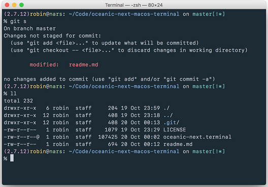

Работа с терминалом MacOS
Запуск командной строки
Для запуска командной строки можно воспользоваться одним из следующих способов:
Нажмите значок Launchpad в панели Dock, введите «Терминал» в поле поиска и нажмите значок Терминала.
В окне Finder откройте папку «Программы/Утилиты» и дважды нажмите приложение «Терминал».

Основной синтаксис
Bash-команда обычно строится так:
[Команда] [Опции] [Ввод или путь к файлу или директории]
Например:
ls -la /Applications
ls – это команда,
-la – это соединение двух опций (-l и -a),
а /Applications – это путь к списку.
Путь
Если вы поймете путь, то поймете и то, как macOS в действительности видит ваши файлы. Например, вот путь к файлу под названием «Мои секреты», лежащему на Рабочем столе:
/Users/Yablykworld/Desktop/My Secrets.
Пробелы
Bash считает пробел концом команды. Т.е. если у вас есть папка с пробелами в названии – например, Yablyk Folder, и вы пытаетесь вывести её содержимое с помощью команды ls /Applications/Yablyk Folder, то соответствующий файл не будет найден, и на выходе появится ошибка.
Чтобы решить эту проблему, понадобятся кавычки или обратный слэш. Вот теперь всё будет правильно:
ls /Applications/"Yablyk Folder", или
ls /Applications/Yablyk\ Folder
Основные команды терминала MacOS
- basename — преобразует полный путь к файлу в короткое имя файла;
- cat — соединить файлы в один и вывести их в стандартный вывод;
- cd — сменить папку;
- chroot — сменить для команды root каталог;
- clear — очистить экран терминала;
- cp — скопировать один или несколько файлов в другое место;
- date — вывести на экран и поменять системное время и дату;
- df — показать свободное дисковое пространство;
- dirname — преобразует полный путь к файлу в путь без имени файла;
- file — определить тип файла;
- find — поиск файлов по определенным критериям;
- gzip — сжатие (архивация) и распаковка файлов;
- history — показать историю выполненных команд;
- info — информация;
- killall — завершить все процессы;
- locate — поиск файлов;
- logout — выйти из системы;
- mkdir — создать новую папку;
- mv — переместить или переименовать файлы;
- open — открыть файл, папку или страницу по URL;
- pwd — вывести имя текущей папки;
- reboot — остановить и перезагрузить систему;
- rm — удалить файлы;
- rmdir — удалить папки;
- wc — посчитать количество строк, слов, символов в файле;